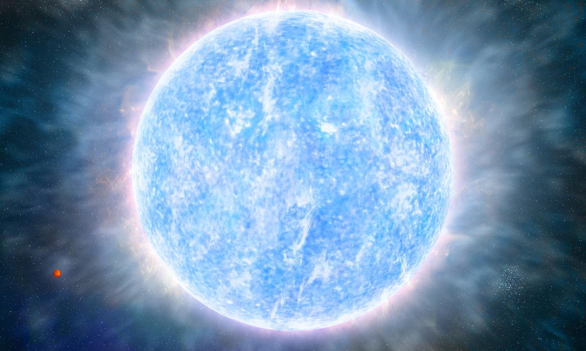

| INICIO |
| NO. | CARACTERISTICAS | |
|---|---|---|
| 1 | TEMPERATURA: Las estrellas de tipo A tienen temperaturas superficiales que van desde alrededor de 7,500 K hasta 10,000 K. Esto las coloca en el rango de estrellas relativamente calientes en comparación con otras estrellas de secuencia principal. |  |
| 2 | COLOR:Debido a su temperatura, las estrellas de tipo A tienden a aparecer de color blanco o blanco-azulado. | |
| 3 | LUMINOSIDAD:Las estrellas de tipo A son generalmente más luminosas que las estrellas más frías, pero menos luminosas que las estrellas de tipo O. | |
| 4 | ESPECTRO: El espectro de una estrella de tipo A mostrará líneas de absorción características, incluyendo líneas de hidrógeno, calcio y otros elementos. Estas líneas se utilizan para determinar la composición química y otras características de la estrella. | |
| 5 | Temperatura: Las estrellas de tipo A tienen temperaturas superficiales que van desde alrededor de 7,500 K hasta 10,000 K. Esto las coloca en el rango de estrellas relativamente calientes en comparación con otras estrellas de secuencia principal. | |
| 6 | Temperatura: Las estrellas de tipo A tienen temperaturas superficiales que van desde alrededor de 7,500 K hasta 10,000 K. Esto las coloca en el rango de estrellas relativamente calientes en comparación con otras estrellas de secuencia principal. |